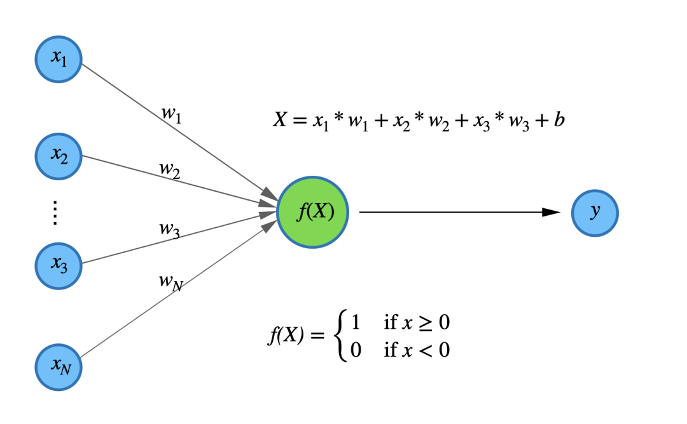
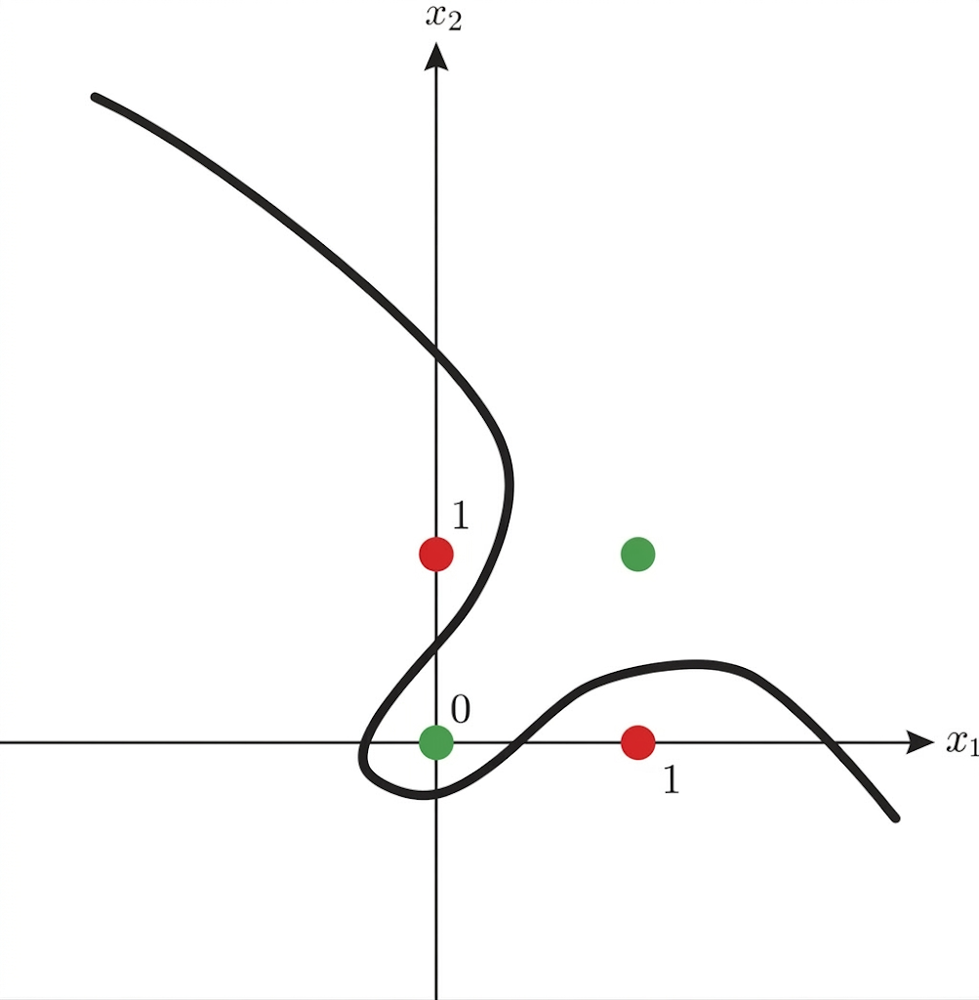
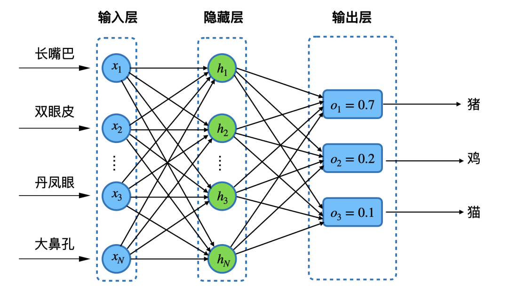
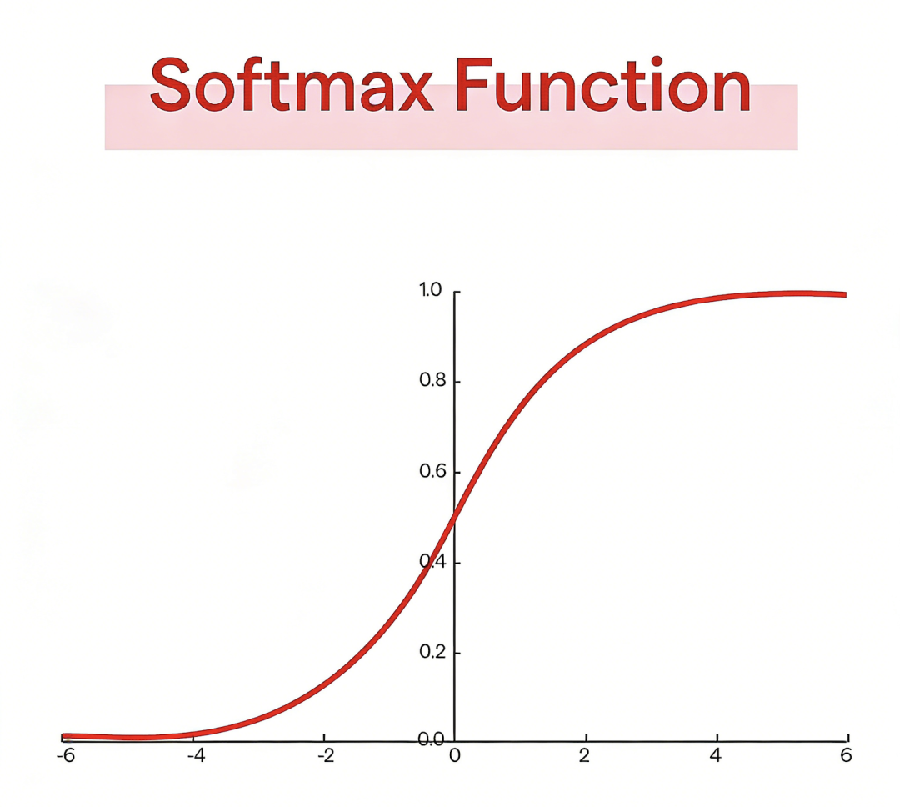
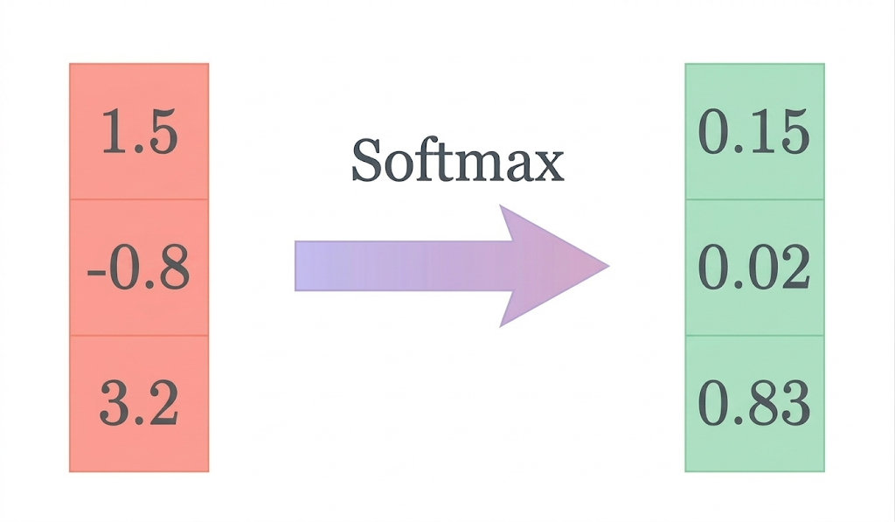
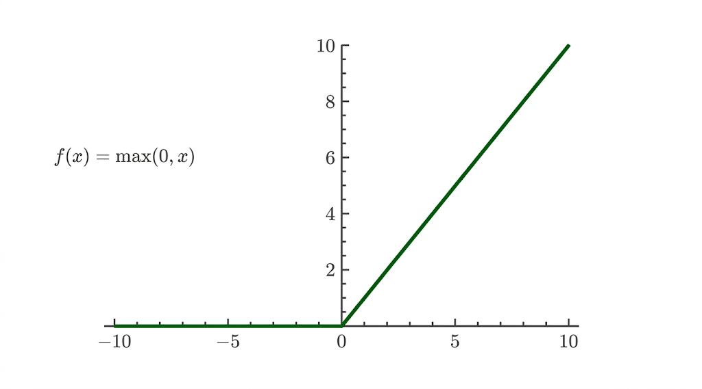
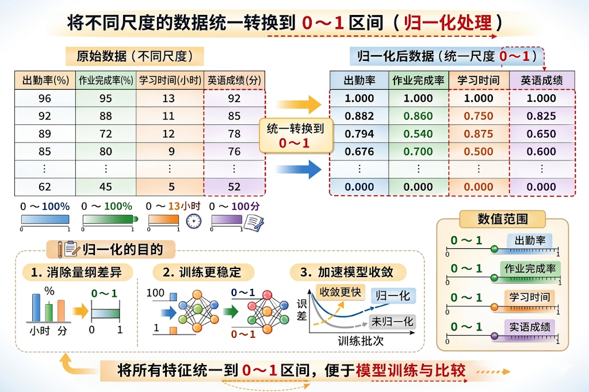
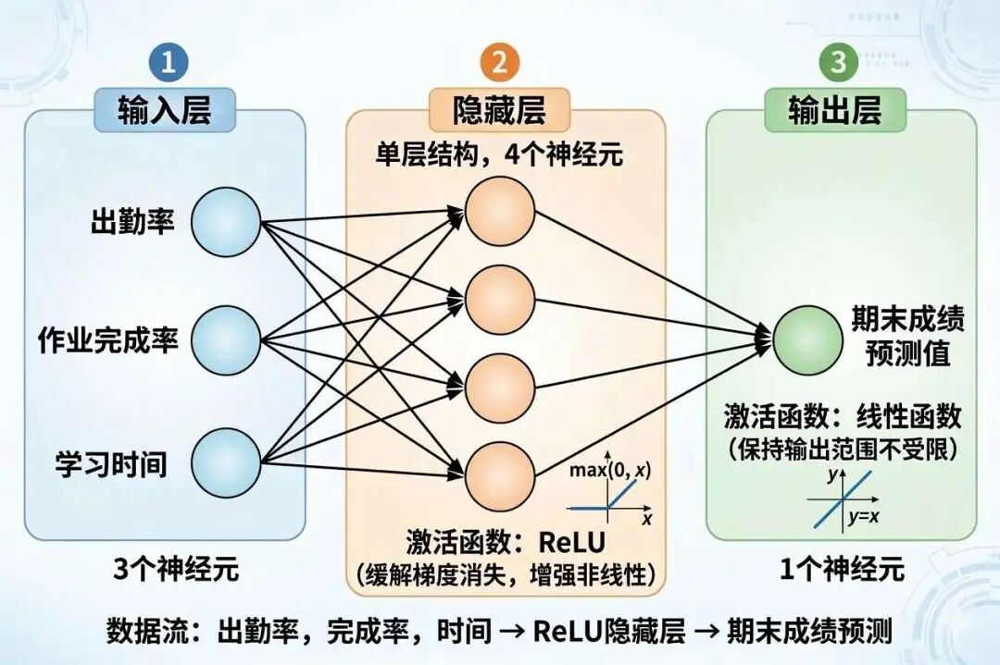
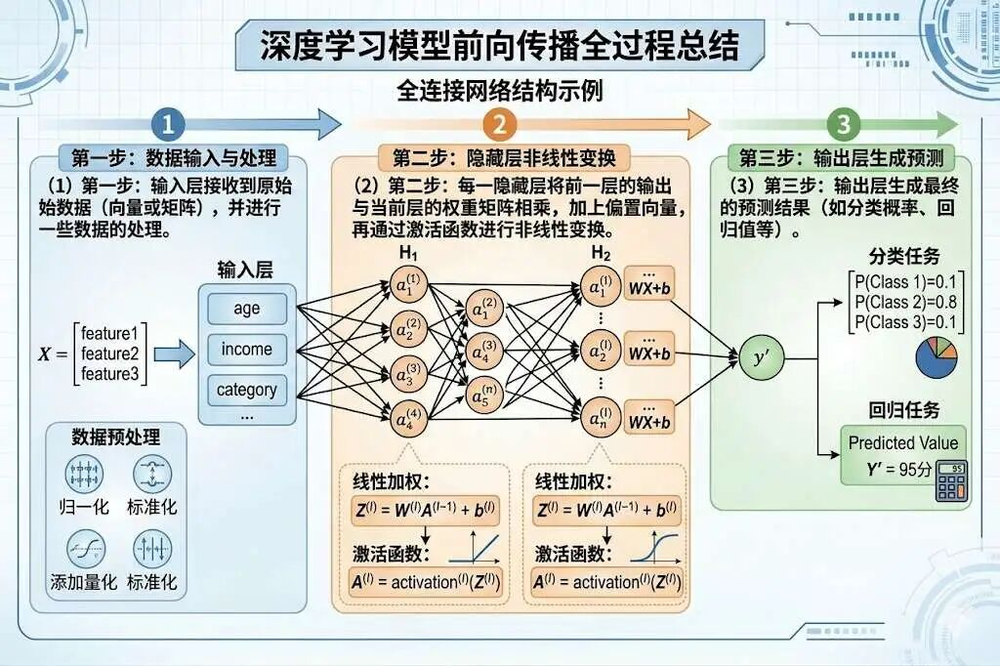

"任何机器若不能以某种方式表示一个对象，就不可能真正学会识别它。"-- 马文·明斯基与 西摩·佩珀特
我们上两篇都是用比较简单的模型来建模的，如线性函数和抛物线函数来建模，但是线性函数有个缺点，只能描述线性组合关系，比如房价和面积的组合关系：面积越大，房价越贵；
又比如学习成绩和学习时长的组合关系：学习时刻越长，成绩越好。
但是当变量之间的作用关系变得复杂，尤其呈现出明显的非线性特征时，简单的线性函数往往就难以准确刻画这种关系了。
比如在现实生活中房价的波动和方方面面的关系都很大，房价高到一定程度，按道理要下跌，但是因为我国对房地产有宏观调控，使得房价在长时间内可以不跌也不涨，按照简单的供需线性关系很难直接解释这种现象，因为现实中的房价还会受到政策调控、市场预期、金融环境等多种复杂因素影响，这也是一种非线性的关系。
同理，学习成绩的好坏和很多因素也有很大关系，比如有的人上课不听讲，学习成绩却依然很好，他的学习成绩和学习时刻就并不成正比。
要捕获上述这些非线性关系，一是函数的参数要足够得多，但是不能简单堆砌；二是要从线性表达能力转向非线性表达能力演进。
神经网络的深层结构和激活函数就是用来突破上述两种限制的，让我们先来学习一下什么是神经网络，神经网络的创作灵感来自于人的神经元及其连接方式，细胞体接收多种输入信号，经过处理得到输出。

上面这个结构只是简单的单层的感知机，单层感知机的表达能力是非常有限的，我们可以用个简单的例子来说明单层感知机的局限性。
单层感知机是结构最简单的人工神经网络，只有输入层和输出层，没有中间隐藏层，本质是一个线性二分类模型。
它对输入特征做加权求和后通过阶跃函数输出 0 或 1，只能解决线性可分问题，无法处理异或等非线性场景。
比如以我们生活中常见的交通灯为例，当两组灯显示相同颜色，如同时红或同时绿，则为"正常状态"；而当两组灯显示不同颜色时，如一红一绿，则为"异常状态"，现实生活中我们也从来没见过这种一红一绿的状态。
单层感知机只能定义"全红或全绿为正常"的线性规则，但无法识别"颜色不同即异常"的情况。
因为故障状态（一红一绿）和正常状态（一红一红）在二维平面上呈对角线分布，无法用一条直线分开两类，比如用曲线则可能可以解决：

于是科学家发明了多层感知机：

多层感知机的结构我们在《门外汉学AI（四）》中有过详细讲解，这里进行一个简单的回顾：
多层感知机（MLP）是在单层感知机的基础上，增加了一层或多层隐藏层的神经网络，由输入层、隐藏层、输出层堆叠构成。
我们说突破线性关系是增强函数表达能力的关键，而激活函数是一种重要的手段，激活函数的灵感依然来源神经网络：神经元通过电化学信号传递信息，当输入信号强度超过阈值时才会触发动作电位（激活），这种 "阈值" 的概念启发了激活函数的设计。
如果没有激活函数，无论神经网络有多少层，其本质仍是一个线性模型，只能解决线性可分的问题。
激活函数引入非线性，使得神经网络能够逼近任意复杂的非线性函数，从而能够处理现实世界中大量存在的非线性问题，如图像识别、自然语言处理等复杂任务。
我们看看以下几种激活函数是怎么突破线性表达约束，从而实现了非线性表达。
比如在分类场景中，我们非常常用到的一个函数：Softmax函数，这是一种用于分类的激活函数，通过输出对应分类的概率，取最大概率对应的分类作为预测结果的一种函数。

具体的计算机制是将任意一组输入的数据，映射为另外一组输出数据，且这些数据的范围为0～1，累加和为1，这些概率值形成了一种概率分布：
$$ \text{Softmax}(z_i) = \frac{e^{z_i - \max(\mathbf{z})}}{\sum_{j=1}^{K} e^{z_j - \max(\mathbf{z})}} $$
另一种我们经常用到的激活函数是ReLU激活函数，它的主要作用除了增强非线性表达能力，独特的设计使得它在输入值大于0时还可以起到缓解梯度消失，小于0可以起到抑制过拟合的作用。

这种设计导致ReLU函数还有一个优点，那就是"计算高效"，因为其只要判断x是否＞0，然后输出本身或者0即可。
我们以预测学生成绩为目的，重新设计一个具有多层感知机的神经网络模型，以替代之前简单的线性函数模型。
这是具有三个特征的学生期末英语成绩的数据集，这是其中的8个样本数据：
| 序号 | 出勤率（%） | 作业完成率（%） | 学习时刻（小时/周） | 英语成绩（分） |
|---|---|---|---|---|
| 1 | 96 | 95 | 13 | 92 |
| 2 | 92 | 88 | 11 | 85 |
| 3 | 89 | 72 | 12 | 78 |
| 4 | 85 | 80 | 9 | 76 |
| 5 | 92.6 | 60 | 9.8 | 68 |
| 6 | 74 | 65 | 7 | 64 |
| 7 | 68 | 50 | 8 | 58 |
| 8 | 62 | 45 | 5 | 52 |
我们一般要对数据进行处理，今天我们介绍一种非常重要的数据处理手段：归一化。
我们看出勤率、作业完成率、学习时刻、英语成绩这四列数据，它们有的是百分比、有的是时间单位、有的是数值，它们的数值尺度有的在0～1以内，有的是0到正无穷，有的是0～100，为了训练的稳定性，通常会对这些数据进行统一尺度，全部换算到0～1这个数值区间。

以下是归一化的公式，以及通过归一化公式得到新的样本数据集：
$$ [ Y = \frac{X - X_{\text{最小值}}}{X_{\text{最大值}} - X_{\text{最小值}}} ] $$| 序号 | 出勤率（归一化） | 作业完成率（归一化） | 学习时刻（归一化） | 英语成绩（归一化） |
|---|---|---|---|---|
| 1 | 1.0000 | 1.0000 | 1.0000 | 1.0000 |
| 2 | 0.8824 | 0.8600 | 0.7500 | 0.8250 |
| 3 | 0.7941 | 0.5400 | 0.8750 | 0.6500 |
| 4 | 0.6765 | 0.7000 | 0.5000 | 0.6000 |
| 5 | 0.9000 | 0.3000 | 0.6000 | 0.4000 |
| 6 | 0.3529 | 0.4000 | 0.2500 | 0.3000 |
| 7 | 0.1765 | 0.1000 | 0.3750 | 0.1500 |
| 8 | 0.0000 | 0.0000 | 0.0000 | 0.0000 |
然后我们开始设计神经网络模型，我们先确定输入层和输出层的，输入层我们这样设计：
（1）3个神经元，对应三个特征：出勤率、作业完成率、学习时刻
然后是输出层，输出层只需要1个神经元，并且需要一个激活函数：
（1）1个神经元，直接输出期末成绩预测值
（2）激活函数：线性函数（保持输出范围不受限）
那隐藏层我们要怎么设计呢？首先层数我们大可不必堆叠过多的层，因为这是一个比较简单的回归问题，因此最多设计两层即可。
那么神经元个数呢？我们推荐4～12个即可，这是一个经验值，主要目的也是防止过拟合，这里我们设置为4个即可。
另外为了防止梯度消失的风险，隐藏层我们可以增加激活函数：ReLU函数。
这样我们的网络结构就设计好了，以下是完整的神经网络预测模型结构：
输入层
（1）3个神经元，对应三个特征：出勤率、作业完成率、学习时刻
隐藏层
（1）单层结构，4个神经元（可调整）
（2）激活函数：ReLU（缓解梯度消失，增强非线性表达能力）
输出层
（1）1个神经元，直接输出期末成绩预测值（回归任务）
（2）激活函数：线性函数（保持输出范围不受限）

用易于理解的伪代码表示：
# 3
x = 输入(出勤率, 作业完成率, 学习时刻)
# 4
hidden_z = x @ W1 + b1
hidden_a = ReLU(hidden_z)
output_z = hidden_a @ W2 + b2
y_pred = 线性(output_z)有了这样一个多层网络结构的模型我们要怎么开始训练呢？
首先和一元二次方程函数一样，我们要对参数进行初始化，那我们有哪些参数呢？我用下面一段伪代码来说明：
# +
# 输入维度：出勤率、作业完成率、学习时刻
input_dim = 3
hidden_dim = 4
output_dim = 1
lr = 学习率
# ->
# 3×4
W1 = 随机初始化(input_dim, hidden_dim)
# 1×4
b1 = 全零(1, hidden_dim)
# ->
# 4×1
W2 = 随机初始化(hidden_dim, output_dim)
# 1×1
b2 = 全零(1, output_dim)参数初始化之后，我们要开始训练了，那么我们第一步要做的事情是什么呢？我们说我们要用这个神经网络结构来预测成绩，那么我们先将第一个样本的数据输入到这个神经网络模型中，从输入层开始计算，一直计算到输出层，看看能够输出什么预测结果，这种过程叫做前向传播，我们具体来看看前向传播是怎么运转的。
为了便于理解，先统一文中的符号：
由于出勤率、作业完成率、学习时刻这三个特征的单位和取值范围不同，因此在进入神经网络之前，通常要先进行归一化处理，把它们统一映射到 [0,1] 区间。
这样做的目的，是消除不同尺度带来的影响，使模型训练更加稳定。
例如：
这样就得到输入向量：
$$ X = [0.6765,\ 0.7000,\ 0.6000] $$本模型只有 1 个隐藏层，包含 4 个神经元。隐藏层的计算分为两步：先做线性变换，再经过激活函数。
(1) 线性变换：
输入向量 $X$ 与权重矩阵 $W_1$ 相乘，再加上偏置 $b_1$，得到隐藏层的线性输出：
$$ Z_1 = XW_1 + b_1 $$这里的 $Z_1$ 是一个 4 维向量，因为隐藏层中有 4 个神经元。
为了方便理解，先看其中一个神经元的计算过程。
为了便于演示前向传播的计算过程，假设初始化时它对应的权重和偏置分别为：
$$ w_1=0.3,\quad w_2=0.5,\quad w_3=0.2,\quad b=0.1 $$则该神经元的线性输出为：
$$ z_1 = 0.6765\times0.3 + 0.7000\times0.5 + 0.6000\times0.2 + 0.1 $$(2) 激活函数处理：
线性结果再经过 $ReLU$ 激活函数：
$$ H_1 = \max(0,\ Z_1) $$刚才这个神经元的线性输出是 0.89，那么经过 ReLU 后仍然为 0.89；如果线性输出是负数，例如 -0.2，那么激活后就会变成 0。

ReLU 的作用是引入非线性表达能力，使网络能够学习更复杂的关系。
假设隐藏层 4 个神经元最终的输出为：
$$ H_1 = [0.7730,\ 0.6200,\ 0.3100,\ 0.5400] $$隐藏层输出 $H_1$ 会继续传入输出层。由于输出层只有 1 个神经元，因此它会把这 4 个数进一步加权求和，并加上偏置，得到最终预测值：
$$ O = H_1W_2 + b_2 $$假设输出层的权重和偏置分别为：
$$ W_2 = \begin{bmatrix} 0.2\\ 0.1\\ 0.1\\ 0.2 \end{bmatrix}, \qquad b_2 = 0.05 $$代入隐藏层的输出
$$ H_1 = [0.7730,\ 0.6200,\ 0.3100,\ 0.5400] $$可得：
$$ O = 0.7730\times0.2 + 0.6200\times0.1 + 0.3100\times0.1 + 0.5400\times0.2 + 0.05 $$因此，该神经网络最终输出的预测结果为：
$$ O = 0.4056 $$如果标签数据同样经过了归一化处理，那么这个结果就表示模型预测的归一化英语成绩为 0.455，可以通过反归一化，把它还原成原始分数。
由于神经网络输出的 $O$ = 0.455 仍然处于 [0,1] 区间，所以还需要进行反归一化，才能得到真正的英语成绩。
英语成绩原始数据的最小值为 52 分，最大值为 92 分，那么反归一化公式为：
$$ \hat{Y} = O \times (Y_{\max}-Y_{\min}) + Y_{\min} $$代入数值：
$$ \hat{Y} = 0.4056 \times (92-52) + 52 $$因此，模型最终预测的英语成绩约为：
$$ \hat{Y} = 68.224 \text{分} $$也就是说，这个学生的预测英语成绩大约是 68.2 分，而实际值为 76 分，看来预测值和真实值的差距有点大，这就说明随机初始化的参数值不够好，这个时候需要通过计算损失，衡量误差，从而调整参数值。
综合起来，这个神经网络从输入到输出的完整过程可以概括为：
$$ \underbrace{X}_{\text{输入特征}} \rightarrow \underbrace{Z_1 = XW_1 + b_1}_{\text{第一层线性变换}} \rightarrow \underbrace{H_1=\text{ReLU}(Z_1)}_{\text{ReLU激活}} \rightarrow \underbrace{O = H_1W_2 + b_2}_{\text{输出层线性变换}} \rightarrow \underbrace{\hat{Y}}_{\text{预测值}} $$其中：
这种从输入层开始一直层层计算，最终得到预测结果的过程就是前向传播。
其实也不复杂，我们给出前向传播一个严谨的定义：
前向传播是通过神经网络的层次化结构，将输入数据逐层变换为输出预测值的计算过程。
然后我们对前向传播的一般过程进行一个总结：
所以前向传播并不神秘，"前向"指的是计算方向是从输入层一直计算到输出层，传播指的是每层的输出结果作为下一层的输入，"层层传递"从而达到传播的效果。
既然有"前向"，自然就会有"反向"，那么反向传播是什么呢？这将是下一课要重点探讨的内容。
线性关系（Linear Relationship）：指输入变量和输出变量之间可以用一次函数或加权求和来描述的关系。在线性关系中，一个变量变化带来的影响通常是稳定、可叠加的。
非线性关系（Nonlinear Relationship）：指输入变量和输出变量之间无法简单用直线或线性加和来描述的关系。现实世界中的很多问题，例如房价波动、学习成绩变化，往往都具有非线性特征。
神经网络（Neural Network）：一种受生物神经元启发而设计的计算模型，由输入层、隐藏层和输出层等结构组成，能够通过多层变换学习复杂的输入输出关系。
单层感知机（Single-Layer Perceptron）：最简单的人工神经网络，只有输入层和输出层，没有隐藏层，本质上是一个线性模型，只能处理线性可分问题，无法解决异或这类非线性问题。
多层感知机（MLP, Multi-Layer Perceptron）：在单层感知机基础上加入一个或多个隐藏层形成的神经网络。由于隐藏层和激活函数的存在，它具备更强的非线性表达能力。
归一化（Normalization）：一种数据预处理方法，用来把不同量纲、不同数值范围的数据统一到相近尺度上，以减少特征之间的尺度差异对模型训练造成的影响。
反归一化（Denormalization）：将模型输出的归一化结果还原回原始数值范围的过程。比如把 0～1 区间里的预测值重新换算成真实分数。
前向传播（Forward Propagation）：指输入数据从输入层出发，经过隐藏层的线性变换与激活函数处理，最终到达输出层并得到预测结果的过程。
线性变换（Linear Transformation）：在神经网络中通常指"输入向量与权重矩阵相乘，再加上偏置向量"的计算过程，是每一层最基础的计算操作。